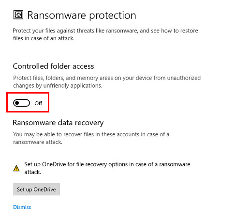

• Bạn đang ở "PosApp PC"
BKTT PosApp PC
Chú ý:
- Bản PosApp PC do cài đặt trên nền tảng Win nên sẽ bị ảnh hưởng bởi hệ điều hành win (đặc biệt bởi những lần Update win).
- Bản PosApp PC một số tính năng còn thiếu và update muộn hãy dùng PosApp trên Android hoặc IOS để ổn định nhất
Đừng nghe theo con tim hay lý chí, mà hãy nghe chú ý...
Hệ điều hành: Win 7 64bit trở lên (khuyễn cáo dùng Win10 64 bit để ổn định nhất)
Ram: 4G trở lên (Càng nhiều càng tốt)
Chú ý: Một số win7 thỏa mãn điều kiện trên nhưng vẫn ko cài được thì nên nâng cấp máy lên win10
Video hướng dẫn cài đặt
Nếu bạn vẫn không cài đặt được, vui lòng tải Utraview theo hướng dẫn sau sau đó gọi hotline để được hỗ trợ
Chú ý: Đây là bước cài driver trên máy tính, cài xong bước này rồi là có thể in từ web hoặc từ app
Máy USB hay Lan đều chung nhau bước cài driver > riêng với dòng máy in lan bạn phải lấy được địa chỉ ip máy in theo cách bên trên sau đó add port rồi điền địa chỉ ip máy in của máy
Máy in hóa đơn
► Tải XPrinter Driver V7.77 (dùng chung cho cả lan và USB)
► Các driver dòng máy in khác tại đây
Máy in tem, mã vạch
► Tải Driver máy in 350B, 350BM (dùng chung cho cả lan và USB)
Chú ý: Cách này chỉ áp dụng cho các máy in hóa đơn, máy bếp có hỗ trợ và dùng trên máy tính (nếu tải sai driver thì cũng sẽ ko thấy setting này)
1 máy in mã vạch, tem hỗ trợ rất nhiều khổ, tùy theo giấy in của bạn dùng khổ nào thì set khổ giấy theo giấy mình sử dụng
Dùng trong trường hợp khách sử dụng trên pc và dùng pc để in mã vạch luôn
Chú ý: Nếu ko đổi ip máy thu ngân về tĩnh thì các máy order, máy in sẽ ko thể kết nối được khi ip máy in nhảy loạn sau mỗi lần mở máy hoặc bắt mạng khác
Ở video bên dưới có 2 cách đổi ip máy tính về tĩnh, đối với cách 2 sẽ cần Tools (1 số máy sẽ ko sử dụng được), và khi ip đã được đổi về tĩnh vui lòng ko quên mạng, ko được sử dụng mạng khác.
Chú ý: Đối với mô hình bán lẻ trên PC sẽ không cần cài đặt app mà chạy trên nền trình duyệt
Video hướng dẫn Sử dụng
Chú ý: Đối với mô hình Spa trên PC sẽ không cần cài đặt app mà chạy trên nền trình duyệt
Video hướng dẫn Sử dụng
Lỗi 1: "Lỗi dữ liệu trong quá trình khởi chạy"
► Lỗi này sra với các bản PosApp 2.5 trở lên
Lỗi 2: "Lỗi dữ liệu trong quá trình khởi chạy" khi mở app + lỗi "Open_failed:..." khi đăng nhập
► Lỗi này sra với các bản PosApp cũ sau khi xóa app tải lại thì bị lỗi trên (Dự đoán là do máy tính đang chặn các ứng dụng ghi dữ liệu lên thư mục Document,hoặc do windows defender chặn không cho ứng dụng có quyền ghi dữ liệu) nếu bạn fix theo cách lỗi 1 không được thì thử cách này nhé
Thông thường thì làm theo đến bước 2 là hết, nếu không làm full các bước cho chắc ăn

Bước 1: Tải phần mềm gỡ cài đặt ứng dụng E hay dùng Total Uninstall 7 rồi gỡ cài đặt hoàn toàn PosApp
Bước 2: Mở "Setting" nhập từ khóa "Controlled folder access" > enter > Chuyển trạng thái từ ON thành OFF như hình dưới
Bước 3: Phân full quyền cho thư mục Document (video hướng dẫn trên Win 11, các win khác làm tương tự, nếu everyone đã full quyền thì bỏ qua bước này)
Bước 4: Tắt hết phần mềm diệt virus đi (tắt mọi cờ trong trình diệt virus)
Bước 5: Sau đó tải lại pm và cài đặt. nếu vẫn lỗi thì tải file Này(đây là file "posapp" trong thư mục Document của 1 máy không lỗi) rồi ném nó qua Document máy bị lỗi
Lỗi sảy ra như hình dưới đây khi order từ máy điện thoại tới thu ngân (máy tính) và máy tính mới cài lại bản PosApp mới


Bước 1:Tắt app > nhấn phím Win + E máy sẽ mở cửa sổ File Explorer sau đó chọn Documents > xóa thư mục PosApp

Bước 2: Mở lại app đăng nhập và kết nối sử dụng bình thường